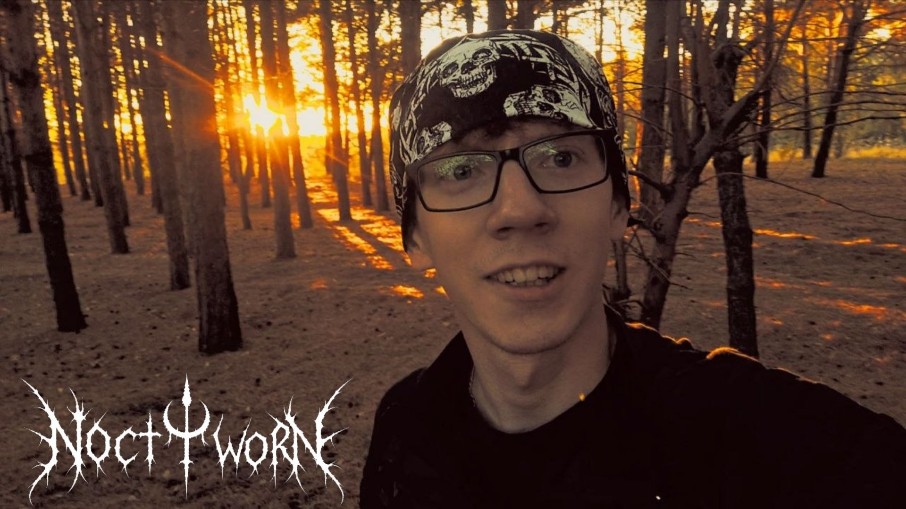

ДОНИ!
Основатель сайта
Меня зовут ДОНИ! Я основатель этого сайта.
Если говорить обо мне, то с музыкой у меня, по большей
части, всегда были довольно далёкие отношения. В блэк-метале
и DSBM я увидел нечто большее, чем просто музыкальное
направление: для меня это стало своеобразным спасением,
возможностью отстраниться от привычного общества и найти
что-то близкое собственному внутреннему миру.
Я никогда не играл на музыкальных инструментах и даже
гитару в руках не держал. Просто слушал музыку. И однажды
пришёл к тому, что можно назвать по-настоящему тяжёлой
музыкой.
Всё изменилось после того, как девушка впервые пригласила
меня на концерт. С первых нот я будто стал другим человеком.
Позже наши отношения закончились, и пережитое расставание
оставило после себя немало тяжёлых воспоминаний. Именно
концерты постепенно стали для меня местом, где я мог
отвлечься от происходящего. Хотя поначалу я боялся туда
ходить и был уверен, что подобная атмосфера совсем не для
меня.
На одном из концертов я познакомился с Mortax, а
приблизительно через месяц смог ближе познакомиться
с самой группой Noctworn и её создателем. Когда я увидел
этих людей и то, чем они занимаются, у меня буквально
загорелись глаза. Мне захотелось помочь им, если не музыкой,
то хотя бы чем-нибудь другим. Так и появился этот сайт.
Позже меня пригласили на репетицию, и моё представление
о происходящем изменилось ещё сильнее. Я даже не ожидал,
что однажды моя жизнь будет связана с людьми и музыкой
такого направления.
В тяжёлый период жизни знакомство с этими ребятами помогло
мне выбраться из замкнутого круга болезненных переживаний.
Я искренне благодарен им за это. Буду помогать Noctworn
настолько, насколько смогу, потому что действительно верю
в большое будущее этой группы.

ИМЯ УЧАСТНИКА
Псевдоним
Биография участника будет добавлена позже.

ИМЯ УЧАСТНИКА
Псевдоним
Биография участника будет добавлена позже.

ИМЯ УЧАСТНИКА
Псевдоним
Биография участника будет добавлена позже.

ИМЯ УЧАСТНИКА
Псевдоним
Биография участника будет добавлена позже.